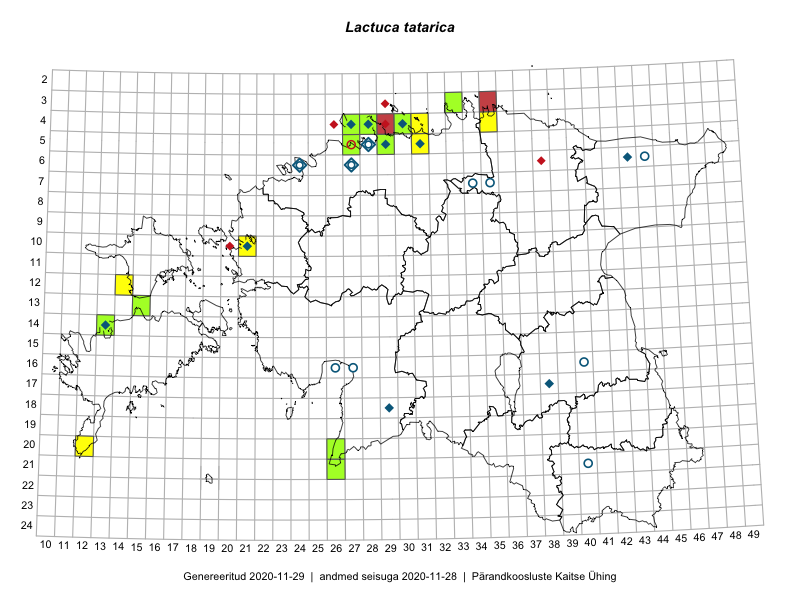

Lactuca tatarica — tatari piimikas
Asteraceae :: Lactuca tatarica (L.) C.A.Mey. (80); Mulgedium tataricum (L.) DC. (15)

Kaart põhineb 96 kirjel:
vaatlusi 33
herbaareksemplare 62
ELFi kirjeid1 1
Taime kaasaegsed ja ajaloolised leiukohad asuvad 24 ruudus.
Tingmärgid ja ruutude arvud periooditi (U2 / V3 )
█ 2006–2020 (15/–)
◆/◇ 1971–2005 (11/16)
○ 1921–1970 (4/8)
+ kuni 1920 (0/0)
× hävinud (–/0)
? kaheldav (–/0)
| Ruut | Leidja(d) | Leiuaeg | Kirje |
|---|---|---|---|
| 04-28 | Maret Kask, Linda Viljasoo | 1973-08 | ruut/ala: Mulgedium tataricum (L.) DC. |
| 04-30 | Thea Kull | 2000-08-02–2000-08-10 | ruut/ala: Mulgedium tataricum (L.) DC. |
| 04-27 | Vilma Kuusk, Heljo Krall | 1999-06-27 | ruut/ala: Mulgedium tataricum (L.) DC. |
| 05-29 | Maret Kask | 1979-07 | ruut/ala: Mulgedium tataricum (L.) DC. |
| 13-15 | Toomas Kukk, Eerik Leibak | 2015-08-10 | ruut/ala: Lactuca tatarica (L.) C.A.Mey. |
| 10-21 | Tõnu Ploompuu | 2015-08-21–2015-08-23 | ruut/ala: Lactuca tatarica (L.) C.A.Mey. |
| 05-29 | Toomas Kukk, Sander Laherand | 2016-08-29 | ruut/ala: Lactuca tatarica (L.) C.A.Mey. |
| 04-31 | Toomas Kukk, Sander Laherand | 2016-08-31 | ruut/ala: Lactuca tatarica (L.) C.A.Mey. |
| 04-31 | Sander Laherand, Toomas Kukk | 2016-08-31 | ruut/ala: Lactuca tatarica (L.) C.A.Mey. |
| 12-14 | Toomas Kukk, Meeli Mesipuu | 2016-08-10 | ruut/ala: Lactuca tatarica (L.) C.A.Mey. |
| 04-28 | Sander Laherand, Tõnu Ploompuu, Nele Jõessar | 2016-07-25 | ruut/ala: Lactuca tatarica (L.) C.A.Mey. |
| 20-26 | Sirje Azarov, Indrek Tammekänd | 2016-07-18 | ruut/ala: Lactuca tatarica (L.) C.A.Mey. |
| 21-26 | Sirje Azarov, Indrek Tammekänd | 2016-07-18 | ruut/ala: Lactuca tatarica (L.) C.A.Mey. |
| 05-31 | Toomas Kukk, Sander Laherand | 2016-08-30 | ruut/ala: Lactuca tatarica (L.) C.A.Mey. |
| 05-31 | Sander Laherand, Toomas Kukk | 2016-08-30 | ruut/ala: Lactuca tatarica (L.) C.A.Mey. |
| 05-29 | Sander Laherand, Toomas Kukk | 2016-09-29 | ruut/ala: Lactuca tatarica (L.) C.A.Mey. |
| 04-28 | Sander Laherand, Tõnu Ploompuu, Nele Jõessar | 2016-07-25 | ruut/ala: Lactuca tatarica (L.) C.A.Mey. |
| 04-28 | Tiina Elvisto, Maria Ksenofontov | 2015-08-09 | ruut/ala: Lactuca tatarica (L.) C.A.Mey. |
| 04-28 | Kadi-Liis Kesler, Tiina Elvisto | 2015-08-12 | ruut/ala: Lactuca tatarica (L.) C.A.Mey. |
| 14-13 | Toomas Kukk, Peedu Saar, Ott Luuk, Sander Laherand | 2012-07-14 | ruut/ala: Lactuca tatarica (L.) C.A.Mey. |
| 14-13 | Mari Reitalu | 2011-07-09 | ruut/ala: Lactuca tatarica (L.) C.A.Mey. |
| 10-21 | Tõnu Ploompuu | 2015-08-21–2015-08-23 | ruut/ala: Lactuca tatarica (L.) C.A.Mey. |
| 14-13 | Mari Reitalu | 2011-09-04 | ruut/ala: Lactuca tatarica (L.) C.A.Mey. |
| 04-28 | Tiina Elvisto, Maria Ksenofontov | 2015-08-09 | ruut/ala: Lactuca tatarica (L.) C.A.Mey. |
| 04-28 | Tiina Elvisto, Maria Ksenofontov | 2015-08-09 | ruut/ala: Lactuca tatarica (L.) C.A.Mey. |
| 04-28 | Kadi-Liis Kesler, Tiina Elvisto | 2015-08-12 | ruut/ala: Lactuca tatarica (L.) C.A.Mey. |
| 05-27 | Ranno Puumets | 2018-07-31 | ruut/ala: Lactuca tatarica (L.) C.A.Mey. |
| 04-35 | Rein Kalamees | 2018-08-18 | ruut/ala: Lactuca tatarica (L.) C.A.Mey. |
| 20-26 | Meeli Mesipuu | 2018-09-02 | ruut/ala: Lactuca tatarica (L.) C.A.Mey. |
| 04-28 | Ott Luuk | 2018-09-07 | ruut/ala: Lactuca tatarica (L.) C.A.Mey. |
| 04-28 | Ott Luuk | 2018-09-07 | ruut/ala: Lactuca tatarica (L.) C.A.Mey. |
| 20-12 | Mari Reitalu | 2008-08-08 | ruut/ala: Lactuca tatarica (L.) C.A.Mey. |
| 12-14 | Toomas Kukk, Peedu Saar | 2019-05-22 | ruut/ala: Lactuca tatarica (L.) C.A.Mey. |
| 21-40 | Vilma Kuusk, Haide-Ene Rebassoo | 1957-08-06 | TAA0000985: Mulgedium tataricum (L.) DC. |
| 21-40 | Vilma Kuusk, Haide-Ene Rebassoo | 1957-08-06 | TAA0000986: Mulgedium tataricum (L.) DC. |
| 21-40 | Vilma Kuusk, Haide-Ene Rebassoo | 1957-08-06 | TAA0000987: Lactuca tatarica (L.) C.A.Mey. |
| 05-28 | Vilma Kuusk | 1958-08-04 | TAA0000988: Mulgedium tataricum (L.) DC. |
| 18-29 | Vilma Kuusk | 1975-06-11 | TAA0000989: Lactuca tatarica (L.) C.A.Mey. |
| 18-29 | Vilma Kuusk | 1975-06-11 | TAA0000990: Mulgedium tataricum (L.) DC. |
| 05-29 | Toomas Kukk | 1990-08-23 | TAA0000991: Lactuca tatarica (L.) C.A.Mey. |
| 04-28 | Maret Kask, Linda Viljasoo | 1973-08-19 | TAA0000992: Mulgedium tataricum (L.) DC. |
| 05-29 | Toomas Kukk | 1990-08-23 | TAA0000993: Lactuca tatarica (L.) C.A.Mey. |
| 06-27 | G. Isotamm | 1972-07-29 | TAA0000994: Mulgedium tataricum (L.) DC. |
| 05-28 | Vilma Kuusk | 1958-08-01 | TAA0000996: Mulgedium tataricum (L.) DC. |
| 05-28 | Gustav Vilbaste | 1939-09-06 | TAA0001000: Mulgedium tataricum (L.) DC. |
| 05-31 | Eerik Leibak | 2001-07-29 | TAA0001001: Lactuca tatarica (L.) C.A.Mey. |
| 05-28 | Gustav Vilbaste | 1939-09-02 | TAA0001003: Lactuca tatarica (L.) C.A.Mey. |
| 05-28 | Gustav Vilbaste | 1939-09-02 | TAA0001004: Lactuca tatarica (L.) C.A.Mey. |
| 05-28 | Gustav Vilbaste | 1939-09-02 | TAA0001005: Lactuca tatarica (L.) C.A.Mey. |
| 05-28 | Gustav Vilbaste | 1939-09-02 | TAA0001006: Lactuca tatarica (L.) C.A.Mey. |
| 05-28 | Gustav Vilbaste | 1939-09-02 | TAA0001007: Mulgedium tataricum (L.) DC. |
| 05-28 | Gustav Vilbaste | 1939-09-02 | TAA0001008: Lactuca tatarica (L.) C.A.Mey. |
| 05-28 | Gustav Vilbaste | 1939-09-02 | TAA0001009: Lactuca tatarica (L.) C.A.Mey. |
| 05-28 | Gustav Vilbaste | 1939-09-02 | TAA0001010: Lactuca tatarica (L.) C.A.Mey. |
| 05-28 | Gustav Vilbaste | 1939-09-02 | TAA0001011: Lactuca tatarica (L.) C.A.Mey. |
| 05-28 | Gustav Vilbaste | 1939-09-02 | TAA0001012: Lactuca tatarica (L.) C.A.Mey. |
| 05-28 | Gustav Vilbaste | 1939-09-02 | TAA0001013: Lactuca tatarica (L.) C.A.Mey. |
| 05-28 | Gustav Vilbaste | 1939-09-02 | TAA0001014: Lactuca tatarica (L.) C.A.Mey. |
| 05-28 | Gustav Vilbaste | 1939-09-02 | TAA0001015: Mulgedium tataricum (L.) DC. |
| 05-28 | Gustav Vilbaste | 1939-09-02 | TAA0001016: Lactuca tatarica (L.) C.A.Mey. |
| 05-28 | Gustav Vilbaste | 1939-09-02 | TAA0001017: Lactuca tatarica (L.) C.A.Mey. |
| 05-28 | Gustav Vilbaste | 1939-09-02 | TAA0001018: Lactuca tatarica (L.) C.A.Mey. |
| 05-28 | Gustav Vilbaste | 1939-09-02 | TAA0001019: Lactuca tatarica (L.) C.A.Mey. |
| 05-28 | Gustav Vilbaste | 1939-09-02 | TAA0001020: Lactuca tatarica (L.) C.A.Mey. |
| 05-28 | Gustav Vilbaste | 1939-09-02 | TAA0001021: Lactuca tatarica (L.) C.A.Mey. |
| 06-44 | Agnes Ojaveer | 1961-08-02 | TAA0001022: Mulgedium tataricum (L.) DC. |
| 05-28 | V. Kumari | 1942-07 | TAM0005431: Lactuca tatarica (L.) C.A.Mey. |
| 06-24 | V. Kasak | 1948-08-06 | TAM0005432: Lactuca tatarica (L.) C.A.Mey. |
| 04-28 | Uve Ramst | 1993-08-04 | TAM0005475: Lactuca tatarica (L.) C.A.Mey. |
| 04-28 | Uve Ramst | 1993-08-04 | TAM0005476: Lactuca tatarica (L.) C.A.Mey. |
| 10-21 | Tõnu Ploompuu | 1991-08-09 | TALL C005820: Lactuca tatarica (L.) C.A.Mey. |
| 06-43 | Tõnu Ploompuu | 1990-07-19 | TALL C005818: Lactuca tatarica (L.) C.A.Mey. |
| 04-27 | Tõnu Ploompuu | 1993-08-10 | TALL C009148: Lactuca tatarica (L.) C.A.Mey. |
| 04-27 | Tõnu Ploompuu | 1993-08-10 | TALL C009149: Lactuca tatarica (L.) C.A.Mey. |
| 17-38 | Tõnu Ploompuu | 1990-06-28 | TALL C010797: Lactuca tatarica (L.) C.A.Mey. |
| 05-29 | Tiiu Liimets | 2016-07-21 | TALL C010846: Lactuca tatarica (L.) C.A.Mey. |
| 04-28 | Kaie Eha, Leida Ojasoo | 2016-07-14 | TALL C010852: Lactuca tatarica (L.) C.A.Mey. |
| 04-28 | Kaie Eha, Leida Ojasoo | 2016-07-14 | TALL C010865: Lactuca tatarica (L.) C.A.Mey. |
| 05-29 | Tiiu Liimets | 2016-07-21 | TALL C010866: Lactuca tatarica (L.) C.A.Mey. |
| 13-15 | Toomas Kukk, Eerik Leibak | 2015-08-10 | TAA0135478: Lactuca tatarica (L.) C.A.Mey. |
| 14-13 | Toomas Kukk | 2012-07-14 | TAA0112581: Lactuca tatarica (L.) C.A.Mey. |
| 14-13 | Toomas Kukk | 2012-07-14 | TAA0112582: Lactuca tatarica (L.) C.A.Mey. |
| 21-26 | Indrek Tammekänd, Sirje Azarov | 2016-07-18 | TAA0137725: Lactuca tatarica (L.) C.A.Mey. |
| 20-26 | Indrek Tammekänd | 2015-09-17 | TAA0136071: Lactuca tatarica (L.) C.A.Mey. |
| 20-26 | Indrek Tammekänd, Sirje Azarov | 2016-07-18 | TAA0139967: Lactuca tatarica (L.) C.A.Mey. |
| 03-33 | Timo Luhamäe, Peedu Saar | 2016-07-26 | TAA0142106: Lactuca tatarica (L.) C.A.Mey. |
| 03-33 | Timo Luhamäe, Peedu Saar | 2016-07-26 | TAA0142107: Lactuca tatarica (L.) C.A.Mey. |
| 20-26 | Meeli Mesipuu | 2018-09-03 | TAA0145223: Lactuca tatarica (L.) C.A.Mey. |
| 20-26 | Meeli Mesipuu | 2018-09-03 | TAA0145224: Lactuca tatarica (L.) C.A.Mey. |
| 04-28 | Ott Luuk | 2018-09-07 | TAA0144858: Lactuca tatarica (L.) C.A.Mey. |
| 04-28 | Ott Luuk | 2018-09-07 | TAA0144859: Lactuca tatarica (L.) C.A.Mey. |
| 04-28 | Ott Luuk | 2018-09-07 | TAA0144860: Lactuca tatarica (L.) C.A.Mey. |
| 05-27 | Thea Kull | 2019-09-05 | TAA0148119: Lactuca tatarica (L.) C.A.Mey. |
| 04-30 | Peedu Saar, Timo Luhamäe | 2019-08-06 | TAA0149311: Lactuca tatarica (L.) C.A.Mey. |
| 04-30 | Peedu Saar, Timo Luhamäe | 2019-08-06 | TAA0149312: Lactuca tatarica (L.) C.A.Mey. |
| 06-24 | Eerik Leibak, Esko Aikio | 2002-06-22 | ELF: 7803 |
Eestimaa Looduse Fondi (ELF) andmebaas sisaldab inventeeritud koosluste kirjeldusi ja liigiloendeid. Eriti rohkesti on andmeid märgalade kohta.↩︎
Ruutude arv uue atlase andmekogu järgi. Muuhulgas arvestab vanemat herbaariumi, 2005. aasta atlase välitöölehtedelt uuesti digitaliseeritud andmeid jne. Uue atlase andmekogust pärinevad andmed on kaardile kantud siniste sümbolitega.↩︎
Ruutude arv 2005. aasta atlase (Kukk, T., Kull, T., Eesti taimede levikuatlas. Eesti Maaülikool, Põllumajandus- ja Keskkonnainstituut, Tartu, 2005) järgi. Andmeallikana on kasutatud levik.exe programmi, kus igas ruudus on registreeritud vaid uusim leid. Seetõttu on vanemate perioodide kohta andmed puudulikud. Kasutatud levik.exe andmestikus leidub mõningaid kõrvalekaldeid atlase trükis ilmunud versioonist, sagedamini tarnade ja käpaliste seas. Lisaks leidub selles andmestikus valik liike (peamiselt väheste leidudega tulnuktaimed), mille kaarte trükis ei avaldatud. Vana atlase andmed ruutudest, milles ei ole uue atlase andmekogus leide enne 2006. aastat, on kaardil esitatud punaste sümbolitega. Vana atlase andmetel hävinud ja kaheldavaid leiukohti pole hilisemate (taas)leidude põhjal korrigeeritud.↩︎